Troubleshooting backup
1. I can't access my team cluster¶
Expand to view
If your OpenShift Web Console link does not appear to work, please obtain the link from your IBM Cloud account by doing the following:
1. Log into your IBM Cloud account
2. Select the enterprise account: 2326304 - itztsglenablement01
3. From the left navigation area, select: Resource list
4. From the Excel file provided in slack for team assignments, obtain your team's Bastion Cluster Name (ie. tech-academy-labXX)
5. Using the value from above, filter the Resource list using the Name column
6. Locate your cluster and double-check you have the correct team cluster. Upon confirmation, click on the cluster to display the cluster
7. From the cluster, select the OpenShift web console blue button in top-right area of the screen.
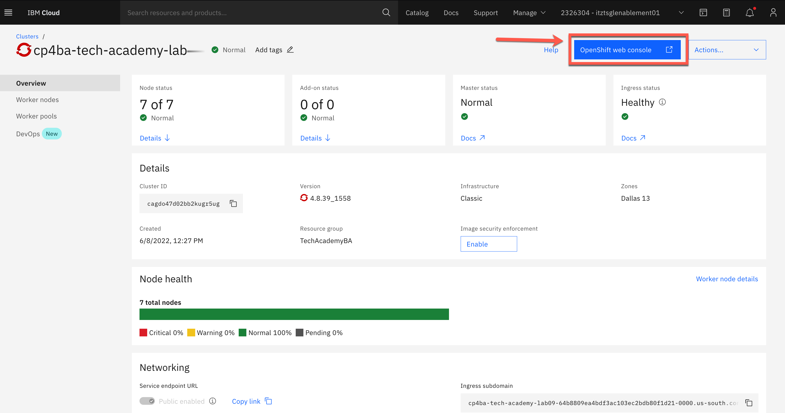
2. I can't find or get an error when trying to access a lab or artifact¶
Expand to view
Please report the issue to an instructor or in the slack channel.
In the meantime, all the labs and artifacts can be accessed here:
- Solution Exports
- Labs
Please note: within each Rebuild capability lab, there may be a reference to a Lab Data folder. This Lab Data folder is located within the capability folder in the Labs folder.
For example, below is the Lab Data folder for ADS (in the Decisions capability folder):
ADS - Lab Data
Note
Recommendation is to clone this GitHub repository so that you have all the artifacts and labs on your local machine.
Reference: the source SWAT TechJam materials are located here: IBM TechJam 21.0.3
3. What are the logins for each CP4BA capability?¶
Expand to view
Please refer to the Client Onboarding - Deploy and Integrate - Installation Links section that identifies how to locate and download the icp4adeploy-cp4ba-access-info config map from the OpenShift Web Console.
10. What you need on IBM Cloud : infrastructure permissions¶
Expand to view
Before you can order virtual machines and create clusters you need to convert your IBM Cloud account to a Pay-As-You-Go account. This is option can be found under account settings. If you have an IBM provided account your manage will need to approve this upgrade.
11. Daffy cluster permission error¶
Expand to view
If you have errors with permissions, you may have selected the wrong account. In this situation, please access your IBM Cloud account and then log out of your account. Next, run your Daffy command again to have it prompt you again for your account selection.
12. Error with environment file edited using Microsoft Notepad¶
Expand to view
If you edit your environment file using a Microsoft Windows machine and/or Microsoft Notepad, you may see extra characters at the end of each line (ie. \r\r\r\r).
20. Getting Help : sharing an oc login command¶
Expand to view
If the software on your cluster is not working as expected you may be asked by an expert to provide a login command or login token. This token allows them to log into your cluster using the CLI. To get the login token log into the OpenShift Web console, in the top right corner there is a drop-down, with your username as a label. Click the label and a Copy Login Command link will be shown, this is highlighted in red below.
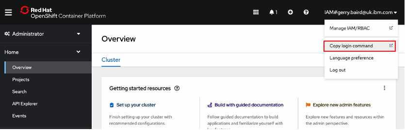
The next screen will display a link "Display Token". Click on this link and the page below will be displayed. Copy the oc login command as highlighted in red.
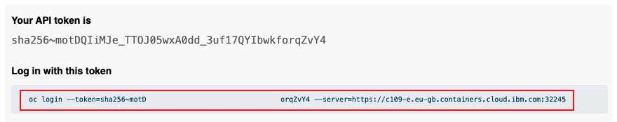
30. Finding Links : Most from Daffy¶
Expand to view
You can find the common link for CP4BA in the cp4ba-access-info config map as shown below. Open the config map and scroll down to find the URL details. 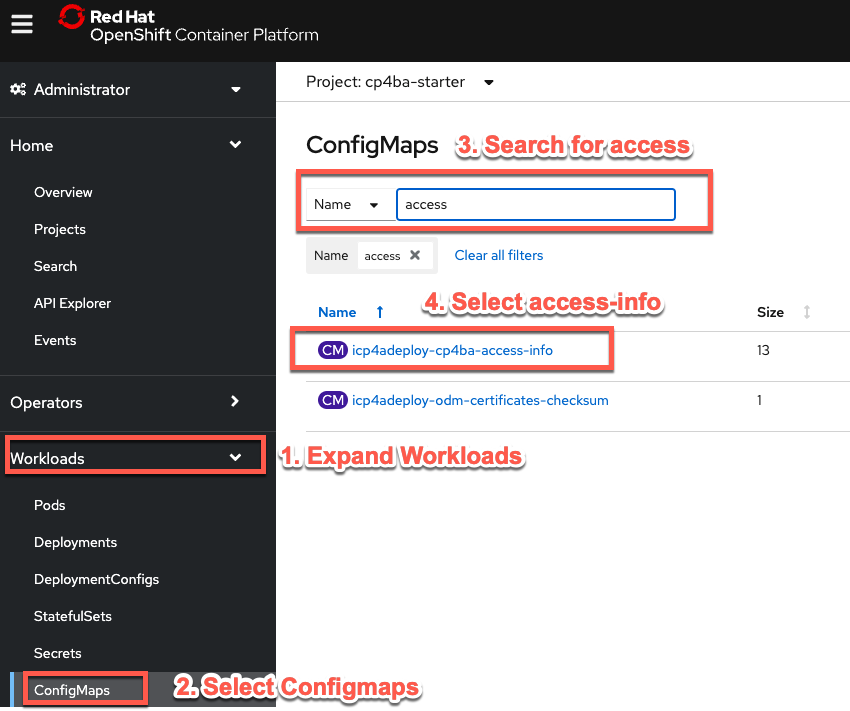
You can also use a Daffy command run from your bastion, Daffy will output the same information from the config map.
/data/daffy/cp4ba/service.sh <your environment> --StarterConsole
31. Daffy - What is build, cleanup and rebuild?¶
Expand to view
/data/daffy
| Script | Description |
|---|---|
| build.sh | This will build the cluster based on your environment file |
| cleanup.sh | This will cleanup/destroy the cluster based on your environment file |
| rebuild.sh | This will call the cleanup.sh then it will call the build.sh |
/data/daffy/ocp
| Script | Description |
|---|---|
| build.sh | This will build the cluster based on your environment file |
| cleanup.sh | This will cleanup/destroy the cluster based on your environment file |
| rebuild.sh | This will call the cleanup.sh then it will call the build.sh |
32. Obscure Links : BAW Process Admin and Rest UI¶
Expand to view
The link for Process Admin is not recorded in the access configmap. To get to Process Admin create the URL using the
template below. Find the URL labeled Cloud Pak Dashboard and use it as the basis for the Process Admin URL:
<Cloud Pak Dashboard>/bas/ProcessAdmin
To get to BPM Rest UI create the URL using the
template below. Find the URL labeled Cloud Pak Dashboard and use it as the basis for the Rest UI URL:
<Cloud Pak Dashboard>/bas/bpmrest-ui
40. Pods : what to look for and how to restart¶
Expand to view
In the CP4BA Starter pattern many of the functional components run within the BA Studio pod. If your software is not behaving as expected (infinite blue spinning wheels, cases not starting) try restarting the BA Studio pod. Expand workloads and select pods, filter using studio and find the running BA Studio pod, click on the three dots and delete the pod. This will cause a new pod to be created, in several minutes login to CP4BA again and see if your fault has cleared.
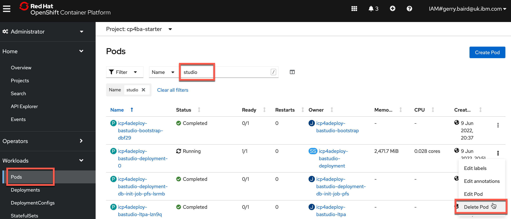
50. Resource Registry : automation service not found - republish¶
Expand to view
If you have published an automation service but the client apps that try to use it reports an error then try unpublishing the automtion service and republish it.
60. Slack groups for help (IBM Only)¶
Expand to view
For issues with the SWAT COB assets : #dba-swat-asset-qna
For Daffy: #daffy-user-group
70. Logs : where do the different components log¶
Expand to view
To access logs from your pods click on the pod name then select the log tab :
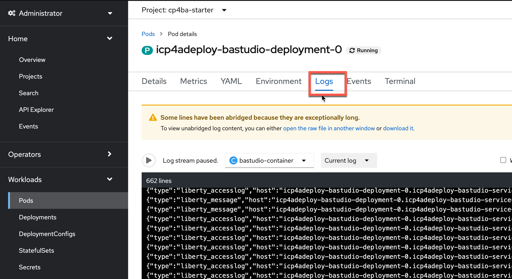
It
71. Better logging : Using an external log service¶
Expand to view
If you are using ROKS on IBM Cloud you can attach a log aggregation service running on IBM Cloud to your CP4BA cluster.
Find the Log Analysis service in the IBM Cloud catalog and create an instance. The lite service doesn't have any log retention so choose the 7 Day search option. 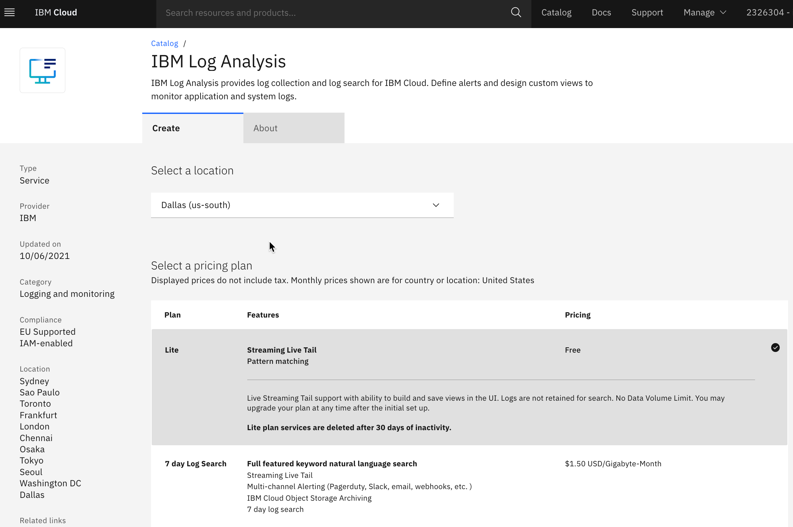
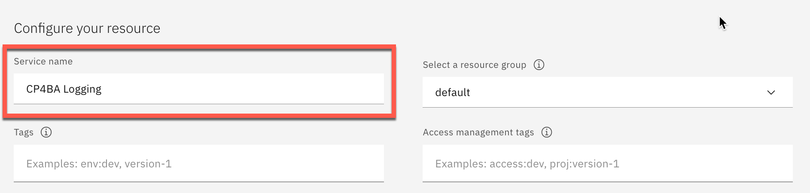
You'll be taken to the logging service page in IBM Cloud, refresh the page in a couple of minutes and your logging service will appear. 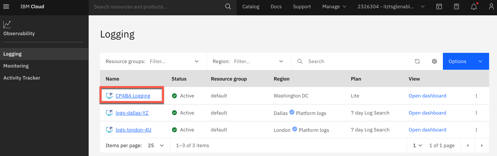
Find your cluster and click on its name to open the cluster details page. 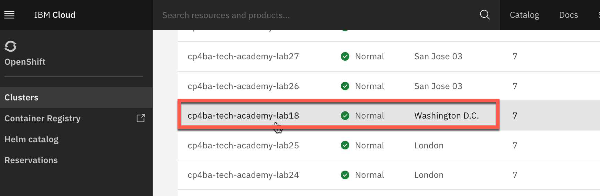
Scroll down to the integrations area and connect to the logging service. Once connected the connect button will be replaced with a launch button. 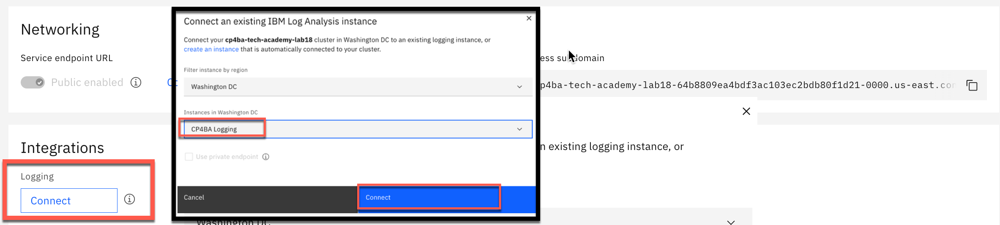
In your apps your log output will now flow through to the log analysis service. In this example a BAW Toolkit is logging info messages, see "Darth Vader" below. 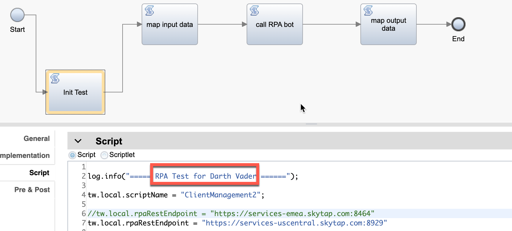
The log analysis service is now receiving all logs from the cluster. Y can now filter by source, here we are filtering for the bastudio pod but this isn't necessary, a global text search is still very effective. 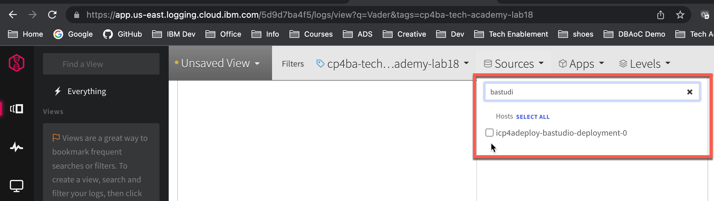
At the bottom of the screen you can enter your search term to find the specific log output. 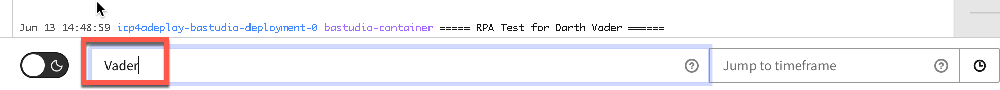 It is also useful to note the timestamp for the event then use "Jump To Timeframe" to find other events from other pods at the same timestamp for faultfinding. Log Analysis has many other features such as saved searches
80. Common faults & fixes : eg restart bastudio (edited)¶
81. I can't find BAWTOS, CLOS or cp4bausers¶
Expand to view
Content including the labs are based on the IBM SWAT Client Onboarding1 materials which are configured for the Production pattern. Our environment uses the Starter pattern and based on that, you may encounter some differences at certain steps.
Below are some differences you should be aware of, please post to the slack channel if you encounter additional differences.
General
For the Starter pattern, use cp4admin instead of cp4bausers which is used in the Production pattern.
Content
Target object store: TARGET in Starter vs BAWTOS in Production
Anywhere you see CLOS object store, use the CONTENT object store.
Decisions
Published automation service: The decisions project name contains the admin username which is different in Starter vs Production. The project name is included in the resource registry which would be different.
Navigator
The desktop uses the target object store and because of the difference in target object store names, we have to create different desktops for Starter vs Production. This GitHub has been updated with the correct artifacts to use the correct object store for the Starter pattern.
App Designer
The Client Onboarding app points to the target object store and this cannot be done with environment variables so we have to create different applications for Starter vs Production. This GitHub has been updated with the correct artifacts to use the correct object store for the Starter pattern.
Otherwise, you need to republish the Decisions automation service to match the correct resource registry name
Workflow
Environment variable needs an update to point to the right target object store. This GitHub has been updated with the correct artifacts to use the correct object store for the Starter pattern.
Otherwise, you need to republish the Decisions automation service to match the correct resource registry name
90. Using Workflow to Orchestrate Asynchronous Long-Running RPA Tasks¶
95. Adding Certificate for RPA Server¶
100. Solution Exports and Labs¶
Expand to view
-
The Client Onboarding assets have been adapted from the IBM TechJam 21.0.3 materials as developed by the IBM SWAT Team ↩